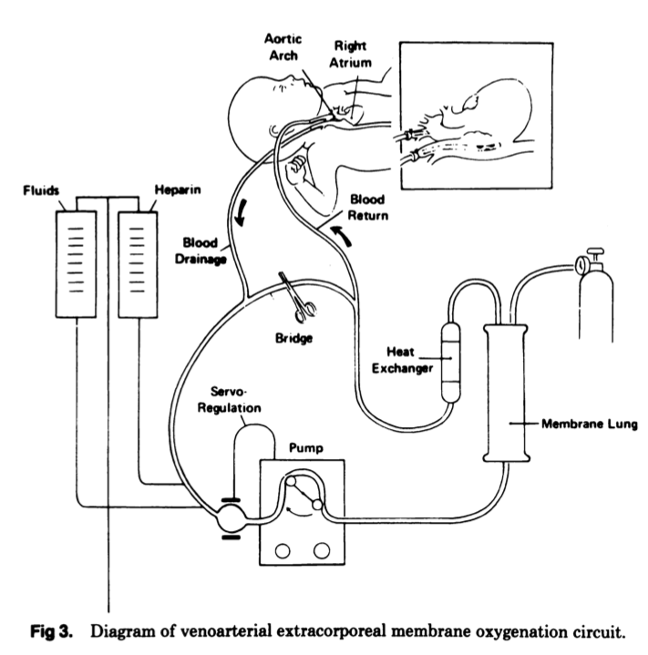

Human Research Ethics: Benefits and Harms
Adam La Caze
School of Pharmacy
The University of Queensland
September 2020
Background
Objectives
- Understand the guidance provided in the National Statement regarding assessing the risks and benefits of human research
- Be able to evaluate the risks and benefits of human research
- Demonstrate your ethical reasoning skills when evaluating human research
Key concepts
- Every aspect of the project influences the possible risks and benefits of the project
- Assessing the risk of a project includes considerations of possible harm and the probability of that harm
- Possible benefits of research are broadly defined
- Informed consent is an important component of ensuring the benefits of the research outweigh possible harms
Defining Risk and Benefit
Principles of research ethics
- Research merit and integrity
- Respect autonomy
- Promote good outcomes (beneficence)
- Avoid harm (non-maleficence)
- Be fair (justice)
Which of these are about “risk” and “benefit”?
Every aspect of the project influences risk and benefit
Defining Risk
- There are many different kinds of harm (as well as less severe unwanted outcomes such as discomfort and inconvenience)
- We need to think about the different kinds of harm (including who may be harmed) and
- The probability of the harm
Types of harm
- physical harm
- psychological harm
- social harm
- economic harm
- legal harm
- ethical harm
- harm to participants
- harm to researchers
- harm to institution
- harm to a community
Low and negligible risk research
The expression ‘low risk research’ describes research in which the only foreseeable risk is one of discomfort. Research in which the risk for participants is more serious than discomfort is not low risk.
The expression ‘negligible risk research’ describes research in which there is no foreseeable risk of harm or discomfort; and any foreseeable risk is no more than inconvenience.
Low and negligible risk research can be approved through modified processes within an institution.
Benefit
Research is ethically acceptable only when its potential benefits justify any risks involved in the research
Defining benefit
Benefits of research may include
- Gains in knowledge, insight and understanding
- Improved social welfare and individual wellbeing
- Gains in skills or expertise for individual researchers, teams or institutions
Research may offer direct benefits to research participants…
For ethical review bodies, there can be a profound tension between the obligation on the one hand to give maximum scope to participants’ freedom to accept risk, and on the other to see that research is conducted in a way that is beneficent and minimises harm.
Informed consent is a key mechanism for ensuring that the potential benefits of research justify the risks involved.
Evaluating risk and benefit
Extracorporeal Membrane Oxygenation (ECMO)

Early ECMO studies
Bartlett et al. (1982) reported a case series that included 45 newborns judged to have less than 10% chance of survival; these infants we treated with ECMO and 25/45 survived
Bartlett et al. (1985) was designed to prove ECMO was effective in these patients.
The study enrolled infants judged to have \(\ge\) 80% mortality rate. Only infants receiving ECMO provided informed consent.
Randomised-play-the-winner design; more infants were to be recruited to whichever treatment arm was the more successful. Planned to stop after 10 survivors or 10 deaths.
Overall 1 control patient (who died) and 11 ECMO patients (who survived). A further 8 patients were given ECMO and survived.

How would you evaluate the risks and benefits associated with this study?
Some considerations that arise from Bartlett et al. (1985)
The importance of research on vulnerable populations
The importance of informed consent. Do you think it was appropriate that only parents of infants that received ECMO gave informed consent to participate?
What standard should be used by clinicians to decide whether or not they should enrol their patient in research?
Developing new oncology treatments
First use in humans is typically on cancer patients with poor prognosis, e.g. expected survival without treatment may be 3 months and best-case survival on treatment up to 5 months
The new treatments carry significant risks, not all of them known and the studies may include a range of additional invasive procedures
In a randomized study whether you receive treatment or control is decided by chance.
Phase I trial of imatinib in chronic myeloid leukaemia (Druker et al. 2001)
Dose escalation trial in chronic phase CML patients in whom interferon-\(\alpha\) treatment had failed. Prognosis is poor, life expectancy measured in months.
83 patients successively assigned to 1 of 14 dose cohorts, ranging from 25mg–1000mg per day
53 of the 54 patients on \(\ge\) 300mg/day had a complete haematological response (reduced WBC and platelet count maintained for four weeks). 51 of these patients maintained this response up to 265 days.
How would you assess the risks/benefits of participating in a study in the last months of your life in which the risks are high, the effort to participate is great and the likelihood of benefit is small?
How should an ethics committee assess these risks?
Cases
Phase I, first-in-humans trial
Anothernib is a new biologic drug is being trialled in chronic myeloid leukaemia.
The objectives of the trial are to determine the maximum tolerated dose and, hopefully, gain some data on the minimal effective dose.
The trial will enrol patients that have failed all other treatments and have poor prognosis (life expectancy measured in months).
Discuss the risks and benefits of this study
Australasian COVID-19 Trial (ASCOT)
Discuss the risks and benefits of this study
Genetic testing
A study seeks to assess a new drug for the treatment of skin cancer.
To participate in the trial, patients need to consent to genetic testing, including:
- Testing for somatic mutations related to the tumour
- Pharmacogenomic mutations related to the pharmacokinetics of the investigational drug
- Genetic screening (including whole genome sequencing) for genes related to skin cancer
Discuss the risks and benefits of this study
Databank
A pharmaceutical company that makes a new drug used for a rare genetic spinal disease seeks to set up a databank.
The databank will recruit all patients taking the drug and collect information on their response, other drugs, and related outcomes.
The company also seeks to collect any left over blood or tissue for genetic tests.
All data will be retained by the company and will not be accessible to third parties.
Discuss the risks and benefits of this study
References
Bartlett, R H, A F Andrews, J M Toomasian, N J Haiduc, and A B Gazzaniga. 1982. “Extracorporeal membrane oxygenation for newborn respiratory failure: forty-five cases.” Surgery 92 (2): 425–33.
Bartlett, R H, D W Roloff, R G Cornell, A F Andrews, P W Dillon, J B Zwischenberger, J H Ware, and M F Epstein. 1985. “Extracorporeal circulation in neonatal respiratory failure: a prospective randomized study.” Pediatrics 76 (4): 479–87.
Druker, B J, M Talpaz, D J Resta, and Et Al. 2001. “Efficacy and safety of a specific inhibitor of the BCR-ABL tyrosine kinase in chronic myeloid leukemia.” The New England Journal of Medicine 344 (14): 1031–7.
Fabsitz, Richard R, Amy Mcguire, Richard R Sharp, Mona Puggal, Laura M Beskow, Leslie G Biesecker, Ebony Bookman, et al. 2011. “Ethical and practical guidlines for reporting genetic research results to study participants: updated guidelines from an NHLBI working group.” Circulation: Cardiovascular Genetics 3 (6): 574–80. https://doi.org/10.1161/CIRCGENETICS.110.958827.Ethical.